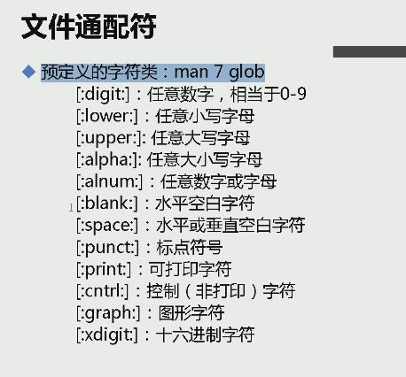

目录配置与文件目录管理
目录配置：可参考FHS标准
/bin:存放二进制文件，常用命令/boot：系统启动项文件,内核/dev:设备文件，硬盘等/etc：配置文件/home:用户家目录，每一个用户在/home下都有一个文件夹/lib：链接库文件/media：媒体自动挂载点，比如U盘，光盘等/mnt：媒体挂载点，手动挂载/opt：自定义软件安装处，默认安装处为/usr/local/root：超级用户目录/sbin：存放系统管理员所能执行的命令/tmp：临时文件/usr：类似于二层根目录/var:存放缓存，日志，数据库文件；该文件夹需要分配的空间较大，因此在磁盘分区时挂载在/var的分区要大一些。/proc：内存中的进程信息/sys：硬件相关信息
文件与目录管理
常用命令：
cd ~:切换到home;cd -:切换到上一次所在目录pwd：打印当前目录basename 和 dirname：分别获取当前路径的文件名和目录名touch xx:若xx不存在，则创建一个新文件xx。若xx存在，把xx的修改时间改为当前。> xx：若文件不存在，则创建一个空文件xx；若文件存在，则清空现有文件xx(可用于清空大文件)。mkdir 目录名 目录名 目录名 ...mkdir -p test/{a,b,c}/{d,e}:递归创建目录，分别在a,b,c三个目录下创建d,e两个目录。rmdir 目录名:只能删除空目录rm -rf目录:删除目录下所有东西（慎用rm）cp [选项] /PATH1/xx /PATH2/yy:若yy是一个目录，则把文件xx拷贝到yy下；若yy不是一个目录，则把文件xx拷贝到PATH2目录下并重命名为yy。cp不能直接拷贝目录，需要加选项参数，cp -rfp /目录1 /目录2 == cp -a /目录1 /目录2：将目录1及其所有子目录及文件拷贝到目录2。参数：-r即递归，-f即强制,-p同时复制属性信息。mv [选项] /PATH1/xx /PATH2/yy：若yy是一个目录，则把文件xx剪切到yy下；若yy不是一个目录，则把文件xx剪切到PATH2目录下并重命名为yy。例如mv xx yy:就是把xx重命名为yy。rename .log .logabc *：重命名，把所有文件名中的.log改为.logabc
关于执行文件路径的变量：执行程序必须在其所在目录下才能执行，亦可使用绝对路径调用，若要直接敲命令就可以执行，则需要设置PATH，把命令所在目录添加在PATH后面。
文件的三个时间属性:
atime:access timemtime:modify timectime:change time
文件名规则：
- 文件名最长255字节
- 蓝色—>目录；绿色—>可执行文件；红色—>压缩文件；浅蓝色—>链接文件；黄色—>设备文件；粉色—>套接字文件；棕色—>管道文件；灰色—>其他文件
文件通配符：
*：匹配0个或多个字符
?：匹配任意一个字符[1-5]：匹配字符1,2,3,4,5[a-c]：匹配字符a、A、b、B、c(没有C)。[A-C]：匹配A，b，B，c，C[^abcd]：匹配除abcd外的所有单个字母- 
文件内容查阅
cat 文件名:显示所有文件内容，适合查看小文件，参数-n显示行数。cat -n 文件名== nl 文件名。tac：从最后一行显示，倒数显示。more/less 文件名:按空格一屏一屏地显示，按回车一行一行地显示。同时在文档下方输入/字符串即可查找文档中的字符串。head -n 21 文件名:查看文件的前21行tail -n 21 文件名:查看文件的尾21行；参数-f,监测日志，实时监测日志的变化。od:查看非文本文档，比如二进制文件。
命令与文件的查询：
which -a 命令:在PATH路径中搜寻命令位置whereis 命令:返回命令路径及其帮助文档的路径；参数-b只返回命令路径。locate 字符串:在/var/lib/mlocate/mlocate.db中查询所有文件名中包含该字符串的文件并返回，该数据库每天定时更新，亦可通过updatedb更新。